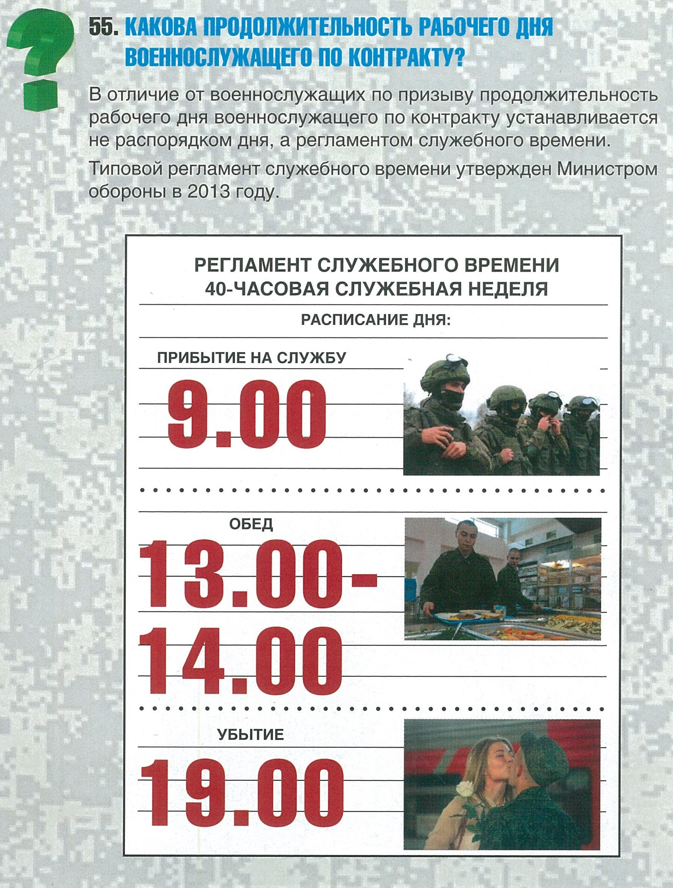

Вернуться на главную
Прохождение военной службы по контракту:
✪ Какова продолжительность рабочего дня военнослужащего по контракту?
✪ Какие условия должны соблюдаться при назначении военнослужащего на воинскую должность?
✪ Что такое высшая, равная, и низшая воинские должности?
✪ В каких случаях военнослужащий может быть назначен на высшую воинскую должность?
✪ В каких случаях военнослужащий может быть назначен на равную воинскую должность?
✪ В каких случаях военнослужащий может быть назначен на низшую воинскую должность?
✪ Возможно ли назначение военнослужащего на равную воинскую должность в другую воинскую часть без его согласия?
✪ В каких случаях военнослужащего по контракту можно перевести в другую воинскую часть?
✪ В каких случаях военнослужащий может быть переведен к новому месту службы по семейным обстоятельствам?
✪ Как происходит назначение военнослужащего на воинскую должность в другую местность, если у него супруг (супруга) также является военнослужащим?
✪ Прохожу службу по контракту на должности заместителя командира взвода. Хочу стать офицером. Как это сделать?
✪ Служил в полиции. Имею звание старшины. Сохранится ли специальное звание при поступлении на военную службу по контракту в Вооруженные Силы?
✪ Я рядовой. Стою на должности командира отделения. Когда мне присвоят очередное воинское звание младшего сержанта?
✪ Возможно ли присвоение военнослужащему очередного воинского звания одновременно с назначением на воинскую должность?
✪ В каком случае военнослужащему может быть присвоено очередное воинское звание досрочно?
✪ Что включает в себя общая продолжительность военной службы?
✪ Меня переводят в другую воинскую часть. Как выплачиваются подъемное пособие и суточные при переезде в другой регион?
✪ В каких случаях заключается новый контракт?
✪ На какой срок заключается новый контракт?
✪ Какой установлен предельный возраст нахождения на военной службе?
✪ Может ли быть военнослужащему отказано в заключении нового контракта?
✪ Для чего проводится ежегодная аттестация военнослужащих по контракту?
✪ В каких случаях присваивается воинское звание прапорщика (мичмана)?
✪ Могут ли военнослужащие рядового и сержантского состава быть назначены на должности прапорщиков (мичманов)?
✪ Могут ли прапорщики (мичманы) быть назначены на должности рядового и сержантского состава?
✪ Может ли проходить военную службу военнослужащий, которому отказано в допуске к сведениям составляющим государственную тайну?
✪ Какова продолжительность основного отпуска в год поступления на военную службу по контракту?
✪ Могу ли я при прохождении военной службы по контракту поехать в отпуск за границу?
✪ Какие мероприятия обязательно проводятся при увольнении с военной службы?
✪ По каким основаниям военнослужащий увольняется с военной службы по контракту?
✪ По каким основаниям военнослужащий может быть досрочно уволен с военной службы по контракту?
✪ В каких случаях военнослужащий имеет право досрочно уволиться с военной службы по контракту?
✪ Необходимо ли согласие военнослужащего при его увольнении по несоблюдению условий контракта?
✪ В каких случаях военнослужащий может выбрать статью увольнения?
✪ Может ли быть уволен военнослужащий имеющий общую продолжительность военной службы более 10 лет и нуждающийся в улучшении жилищных условий, без обеспечения жилым помещением по установленным нормам?
✪ Чем должен быть обеспечен военнослужащий перед увольнением с военной службы?
